Mare
📍 Qui sotto casa
Mare
📍 Qui sotto casa
Spiaggia di San Pietro in Bevagna
Quindici chilometri di spiaggia sabbiosa bagnata dal Mar Ionio, con acque limpide e fondali bassi. Un litorale quasi interamente libero, tranquillo e selvaggio, con dune e macchia mediterranea a fare da cornice.
È la spiaggia di casa — a due passi dagli appartamenti.
 Fiume
Fiume
Foce del Fiume Chidro
Dove le acque dolci del Chidro incontrano il Mar Ionio. Un angolo suggestivo e protetto, con sabbia finissima e un microclima unico. Secondo la leggenda, le conchiglie qui sono le "lacrime di San Pietro".
Riserva naturale Vedi su Maps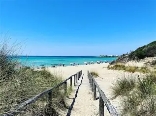
MarePunta Prosciutto
Sabbia bianca finissima e acque color smeraldo che sembrano caraibiche. Considerata tra le spiagge più belle d'Italia, vale assolutamente la gita.
Spiaggia libera Vedi su Maps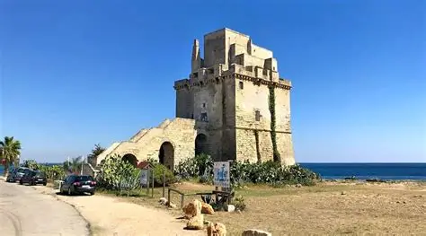
MareTorre Colimena
Dune di sabbia, macchia mediterranea e ginestre fino al mare. La torre costiera cinquecentesca domina il paesaggio all'interno della Riserva delle Saline.
Riserva naturale Vedi su Maps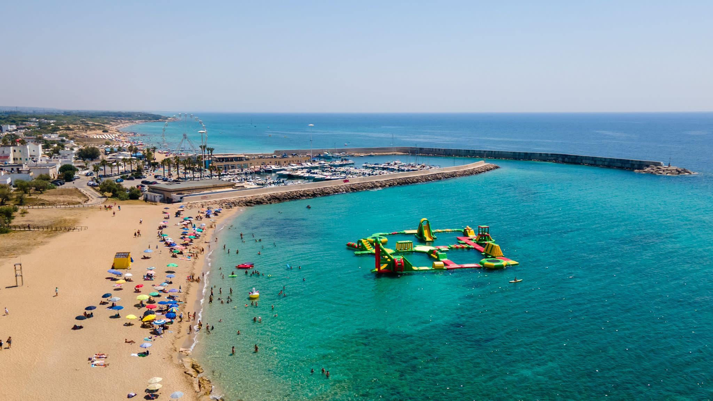
MareCampomarino di Maruggio
Nove chilometri di spiagge con dune bianche spettacolari e pinete ombrose. Acque bassissime, perfette per le famiglie con bambini.
Spiaggia libera Vedi su Maps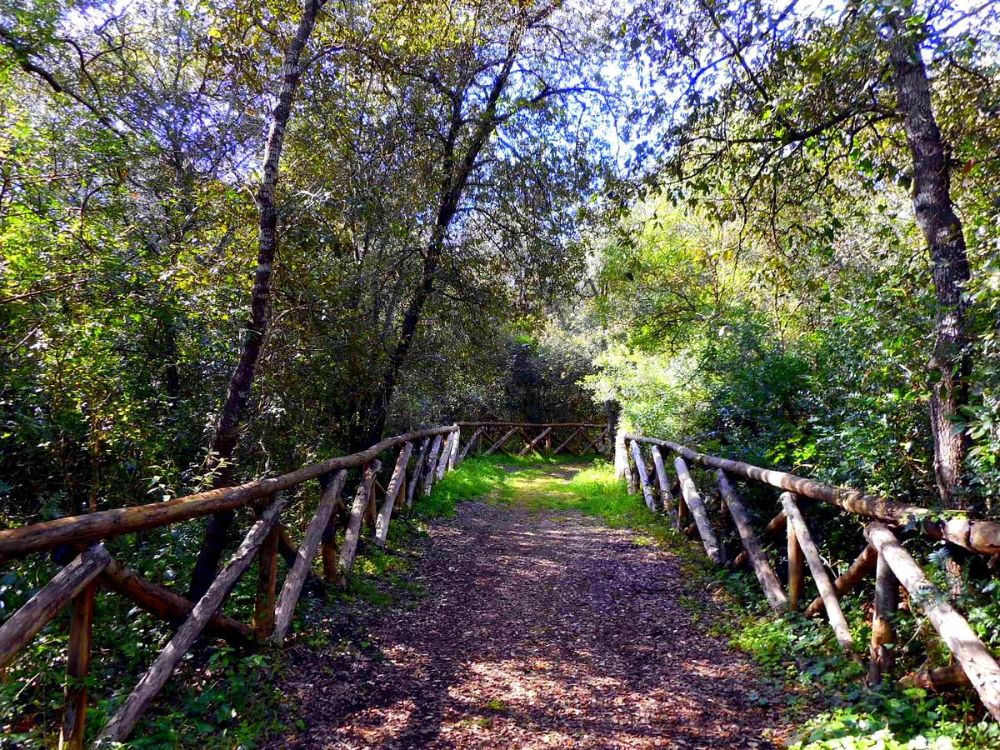
Bosco 📍 Partenza da San Pietro · 14,7 km loopBosco dei Cuturi
Il percorso escursionistico più amato della zona: un anello di quasi 15 km che attraversa il Bosco Cuturi, con lecci e querce centenarie.
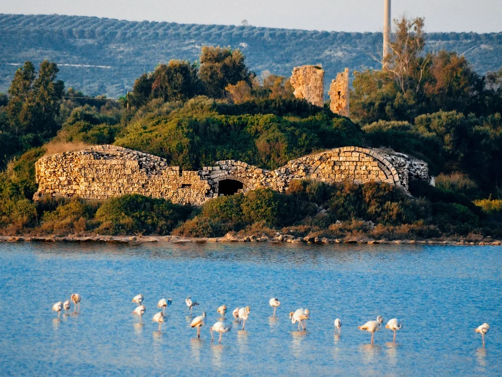
Riserva NaturaleRiserva Salina dei Monaci
Area umida protetta tra Torre Colimena e Porto Cesareo, rifugio per fenicotteri rosa, aironi e anatre selvatiche. Il giro della salina è una passeggiata tranquilla adatta a tutta la famiglia.
Oasi WWF Vedi su Maps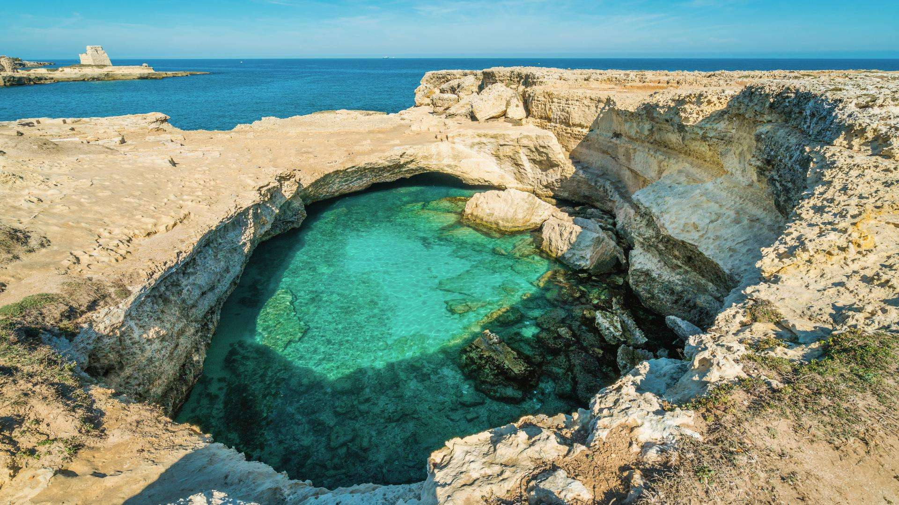
Piscina NaturaleGrotte della Poesia
Una delle più grandi aree di arte rupestre del Mediterraneo, con oltre 3.000 graffiti preistorici incisi sulle pareti di due grotte affacciate direttamente sul mare.
Arte rupestre Vedi su Maps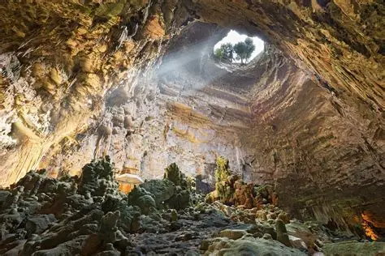
GrotteGrotte di Castellana
Il complesso di grotte carsiche più famoso d'Italia, con oltre 3 km di gallerie sotterranee e la spettacolare Grotta Bianca, considerata tra le più belle al mondo.
Patrimonio naturale Vedi su Maps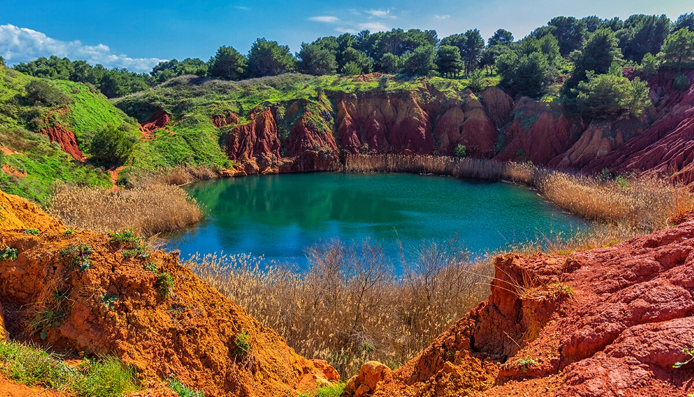
NaturaCave di Bauxite
Un paesaggio marziano nel cuore del Salento: le cave dismesse si sono riempite d'acqua nel tempo, creando un lago dal colore rosso intenso circondato da pareti ocra. Un posto inaspettato e spettacolare.
Otranto Vedi su Maps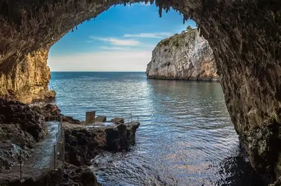
GrotteGrotta Zinzulusa
Una grotta marina scavata dal mare nella roccia calcarea, con stalattiti e stalagmiti che scendono fino all'acqua. Si trova a Castro, uno dei tratti di costa più suggestivi del Salento adriatico.
Castro · Grotta marina Vedi su Maps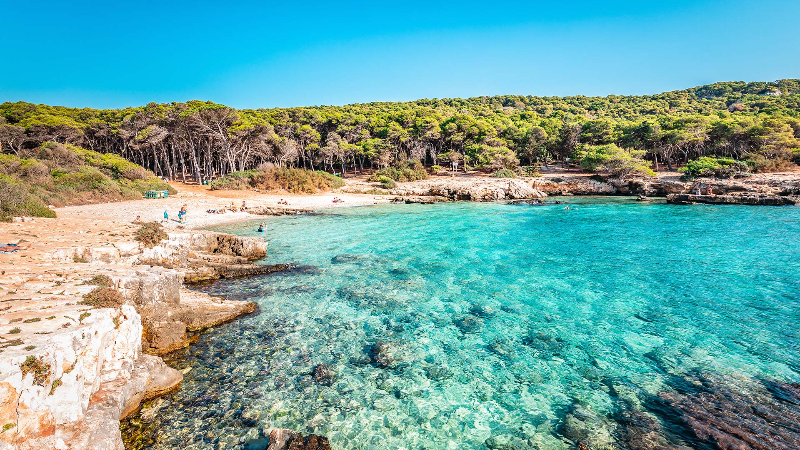
NaturaPorto Selvaggio
Una delle riserve naturali più belle del Salento: pineta fitta fino alla scogliera, sentieri nel bosco e una caletta nascosta raggiungibile solo a piedi. Mare cristallino e nessun stabilimento balneare.
Riserva naturale Vedi su Maps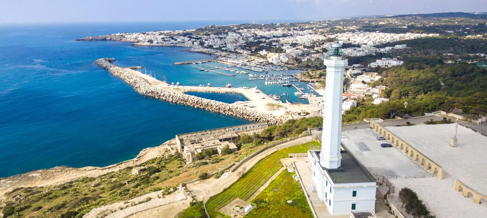
EsursioneSanta Maria di Leuca
Il punto più a sud della Puglia, dove il Mar Ionio incontra l'Adriatico. Il santuario in cima alla scogliera, le ville Liberty sul lungomare e le grotte marine ne fanno una meta unica.
Finibus Terrae Vedi su Maps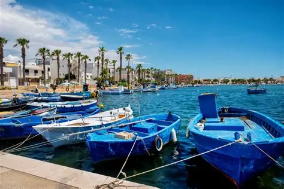
NaturaRiserva di Porto Cesareo
Area marina protetta con acque tra le più trasparenti del Mediterraneo. Fondali ricchi di posidonia, isolotti sabbiosi e spiagge da cartolina a pochi chilometri da San Pietro.
Area marina protetta Vedi su Maps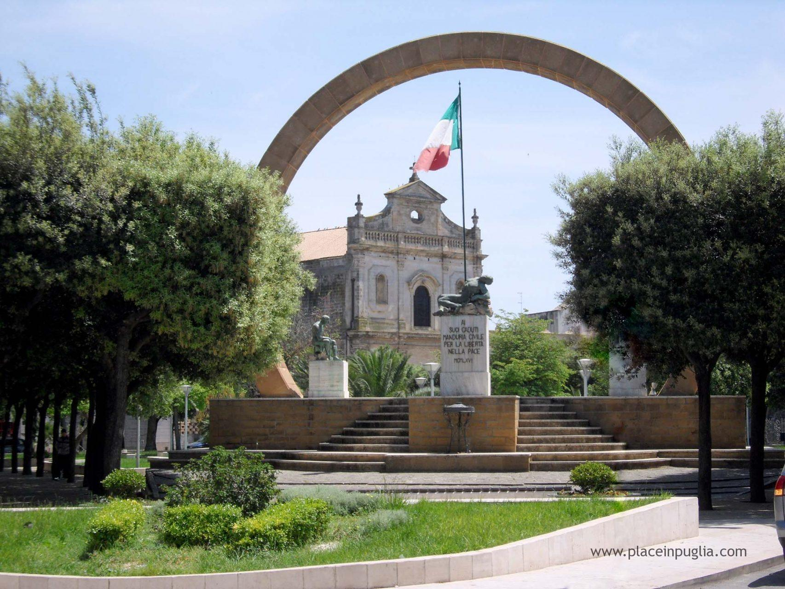
Storia & gusto 📍 12 km · 15 min in autoManduria
A soli 15 minuti dalle case, Manduria è la patria del vino Primitivo — uno dei rossi più pregiati d'Italia. Il centro storico custodisce le antiche Mura Messapiche e un parco archeologico unico. Una tappa imperdibile anche solo per una cena in una delle sue cantine storiche.
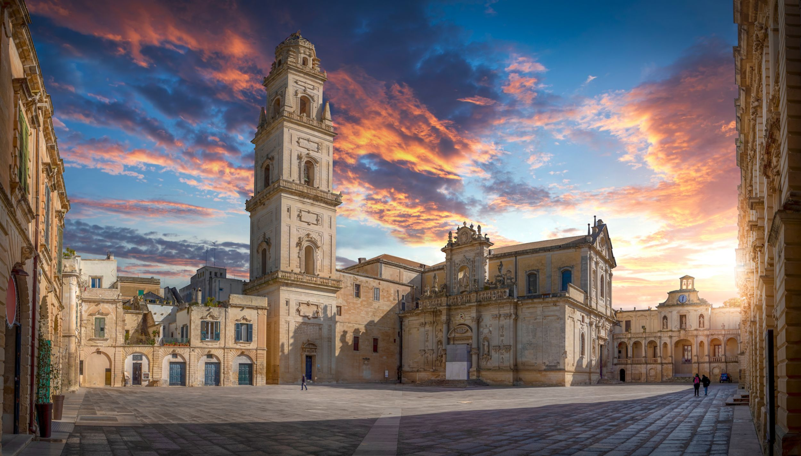
Storia & gustoLecce
La "Firenze del Sud" con le sue chiese barocche in pietra dorata, il centro storico vivace e la gastronomia salentina. Una città che lascia il segno.
Patrimonio barocco Vedi su Maps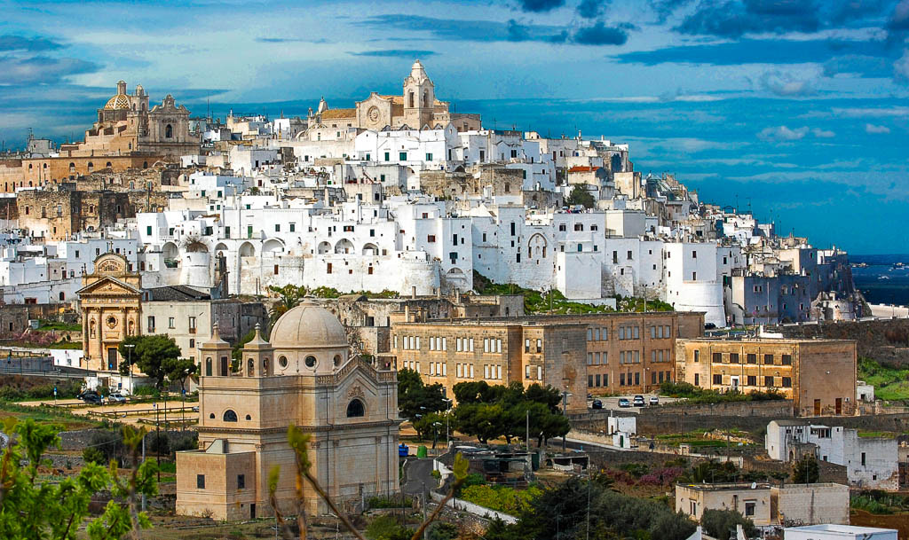
Storia & gustoOstuni
La città bianca arroccata su una collina, con vicoli imbiancati a calce e una vista mozzafiato sulla valle degli ulivi. Uno dei borghi più belli d'Italia.
Borgo medievale Vedi su Maps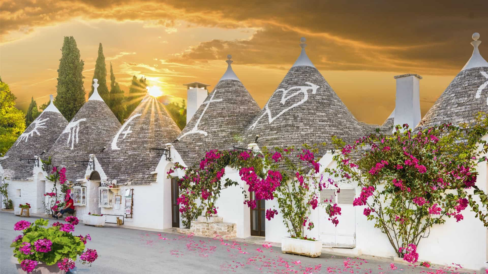
Storia & gustoAlberobello
I celebri trulli, le costruzioni coniche in pietra a secco patrimonio UNESCO. Un paesaggio unico al mondo da vedere almeno una volta nella vita.
Patrimonio UNESCO Vedi su Maps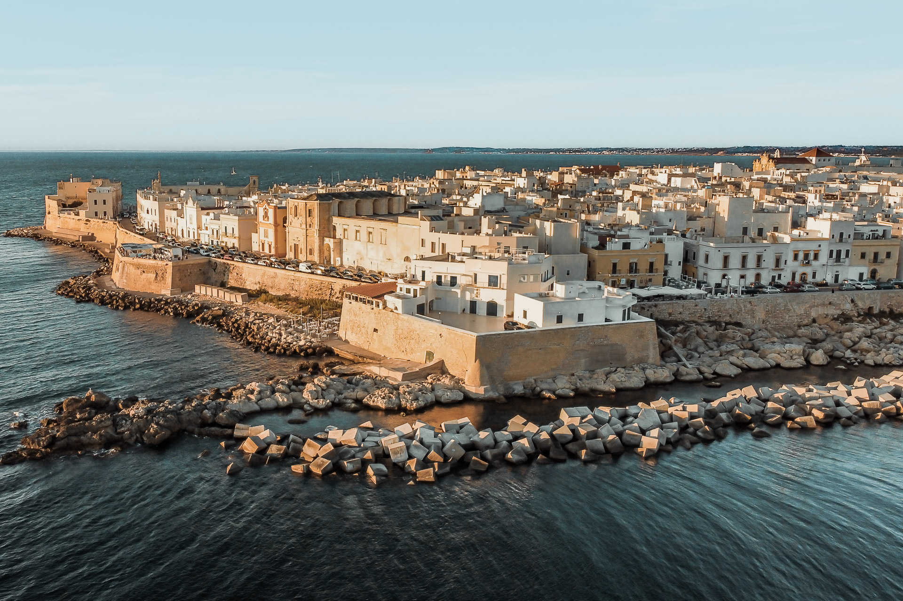
Storia & gustoGallipoli
Il borgo antico si estende su un'isola collegata alla terraferma da un ponte. Mare cristallino, spiagge premiate e una vita notturna tra le più animate del Salento.
Borgo sul mare Vedi su MapsNessuna attrazione trovata per questa categoria.